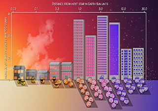
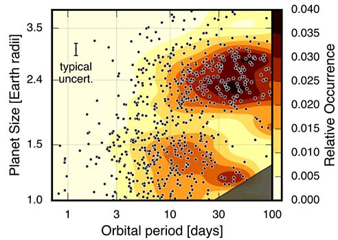
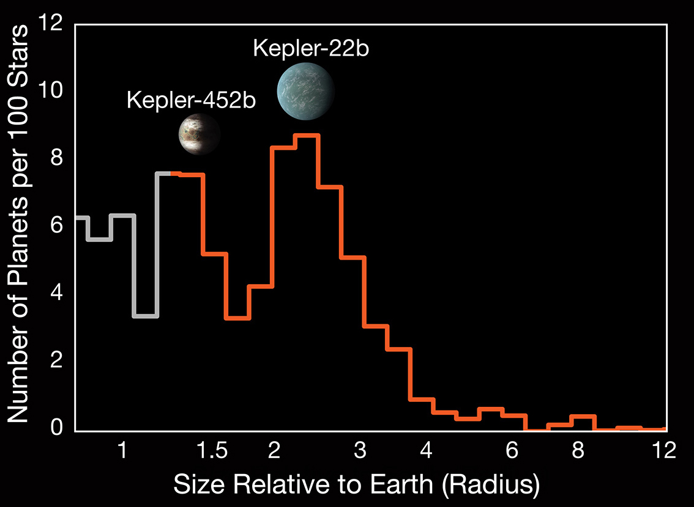
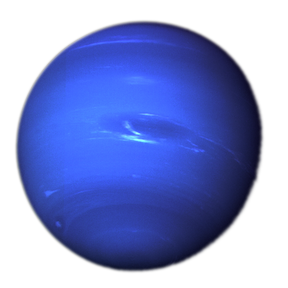
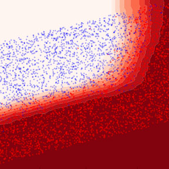
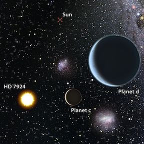
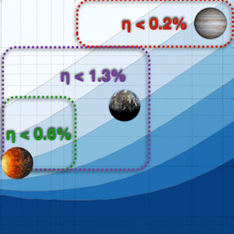

Beichman, Charles; Quarles, Billy; Fulton, B. J.; Lewis, Nikole; Challener, Ryan; de Wit, Julien; Rice, Malena; Inglis, Julie; Kataria, Tiffany
Isaacson, Howard; Howard, Andrew W.; Fulton, Benjamin; Petigura, Erik A.; Weiss, Lauren M.; Kane, Stephen R.; Carter, Brad; Beard, Corey; Giacalone, Steven; Van Zandt, Judah; Murphy, Joseph M. Akana; Dai, Fei; Chontos, Ashley; Polanski, Alex S.; Rice, Malena; Lubin, Jack; Brinkman, Casey; Rubenzahl, Ryan A.; Blunt, Sarah; Yee, Samuel W.; MacDougall, Mason G.; Dalba, Paul A.; Tyler, Dakotah; Behmard, Aida; Angelo, Isabel; Pidhorodetska, Daria; Mayo, Andrew W.; Holcomb, Rae; Turtelboom, Emma V.; Hill, Michelle L.; Bouma, Luke G.; Zhang, Jingwen; Crossfield, Ian J. M.; Saunders, Nicholas
Hurt, Spencer A.; Fulton, Benjamin; Isaacson, Howard; Rosenthal, Lee J.; Howard, Andrew W.; Weiss, Lauren M.; Petigura, Erik A.
Pearson, Kyle A.; Beichman, Charles; Fulton, B. J.; Esposito, Thomas M.; Zellem, Robert T.; Ciardi, David R.; Rolfness, Jonah; Engelke, John; Fatahi, Tamim; Zimmerman-Brachman, Rachel; Avsar, Arin; Bhalerao, Varun; Boyce, Pat; Bretton, Marc; Burnett, Alexandra D.; Burt, Jennifer; Cynamon, Charles H.; Fowler, Martin; Gallego, Daniel; Gomez, Edward; Guillet, Bruno; Hilburn, Jerry; Jongen, Yves; Kataria, Tiffany; Kokori, Anastasia; Kumar, Harsh; Kuossari, Petri; Lekkas, Georgios; Marchini, Alessandro; Meneghelli, Nicola; Ngeow, Chow-Choong; Primm, Michael; Samantaray, Subham; Shimizu, Masao; Silvis, George; Sienkiewicz, Frank; Swain, Vishwajeet; Tan, Joshua; Tock, Kalee; Wagner, Kevin; Wunsche, Anael
Rosenthal, Lee J.; Fulton, Benjamin J.; Hirsch, Lea A.; Isaacson, Howard T.; Howard, Andrew W.; Dedrick, Cayla M.; Sherstyuk, Ilya A.; Blunt, Sarah C.; Petigura, Erik A.; Knutson, Heather A.; Behmard, Aida; Chontos, Ashley; Crepp, Justin R.; Crossfield, Ian J. M.; Dalba, Paul A.; Fischer, Debra A.; Henry, Gregory W.; Kane, Stephen R.; Kosiarek, Molly; Marcy, Geoffrey W.; Rubenzahl, Ryan A.; Weiss, Lauren M.; Wright, Jason T.
Dedrick, Cayla M.; Fulton, Benjamin J.; Knutson, Heather A.; Howard, Andrew W.; Beatty, Thomas G.; Cargile, Phillip A.; Gaudi, B. Scott; Hirsch, Lea A.; Kuhn, Rudolf B.; Lund, Michael B.; James, David J.; Kosiarek, Molly R.; Pepper, Joshua; Petigura, Erik A.; Rodriguez, Joseph E.; Stassun, Keivan G.; Stevens, Daniel J.
Hirsch, Lea A.; Rosenthal, Lee; Fulton, Benjamin J.; Howard, Andrew W.; Ciardi, David R.; Marcy, Geoffrey W.; Nielsen, Eric; Petigura, Erik A.; de Rosa, Robert J.; Isaacson, Howard; Weiss, Lauren M.; Sinukoff, Evan; Macintosh, Bruce

Fulton, Benjamin J.; Rosenthal, Lee J.; Hirsch, Lea A.; Isaacson, Howard; Howard, Andrew W.; Dedrick, Cayla M.; Sherstyuk, Ilya A.;
Blunt, Sarah C.; Petigura, Erik A.; Knutson, Heather A.; Behmard, Aida; Chontos, Ashley; Crepp, Justin R.; Crossfield, Ian J. M.;
Dalba, Paul A.; Fischer, Debra A.; Henry, Gregory W.; Kane, Stephen R.; Kosiarek, Molly; Marcy, Geoffrey W.; Rubenzahl, Ryan A.;
Weiss, Lauren M.; Wright, Jason T.

Fulton, Benjamin J. and Petigura, Erik A.

Fulton, Benjamin J.; Petigura, Erik A.; Howard, Andrew W.; Isaacson, Howard;
Marcy, Geoffrey W.; Cargile, Phillip A.; Hebb, Leslie; Weiss, Lauren M.;
Johnson, John Asher; Morton, Timothy D.; Sinukoff, Evan; Crossfield, Ian J. M.;
Hirsch, Lea A.
Fulton, Benjamin J.; Petigura, Erik A.; Blunt, Sarah; Sinukoff, Evan

Fulton, Benjamin J.; Howard, Andrew W.; Weiss, Lauren M.; Sinukoff, Evan; Petigura, Erik A.; Isaacson, Howard;
Hirsch, Lea; Marcy, Geoffrey W.; Henry, Gregory W.; Grunblatt, Samuel K.; Huber, Daniel; von Braun, Kaspar;
Boyajian, Tabetha S.; Kane, Stephen R.; Wittrock, Justin; Horch, Elliott P.; Ciardi, David R.; Howell, Steve B.;
Wright, Jason T.; Ford, Eric B.,

Howard, Andrew W. and Fulton, Benjamin J.,

Fulton, Benjamin J.; Weiss, Lauren M.; Sinukoff, Evan; Isaacson, Howard; Howard, Andrew W.; Marcy,
Geoffrey W.; Henry, Gregory W.; Holden, Bradford P.; Kibrick, Robert I.,

Fulton, Benjamin J.; Tonry, J. L.; Flewelling, H.; Burgett, W. S.; Chambers, K. C.;
Hodapp, K. W.; Huber, M. E.; Kaiser, N.; Wainscoat, R. J.; Waters, C.,